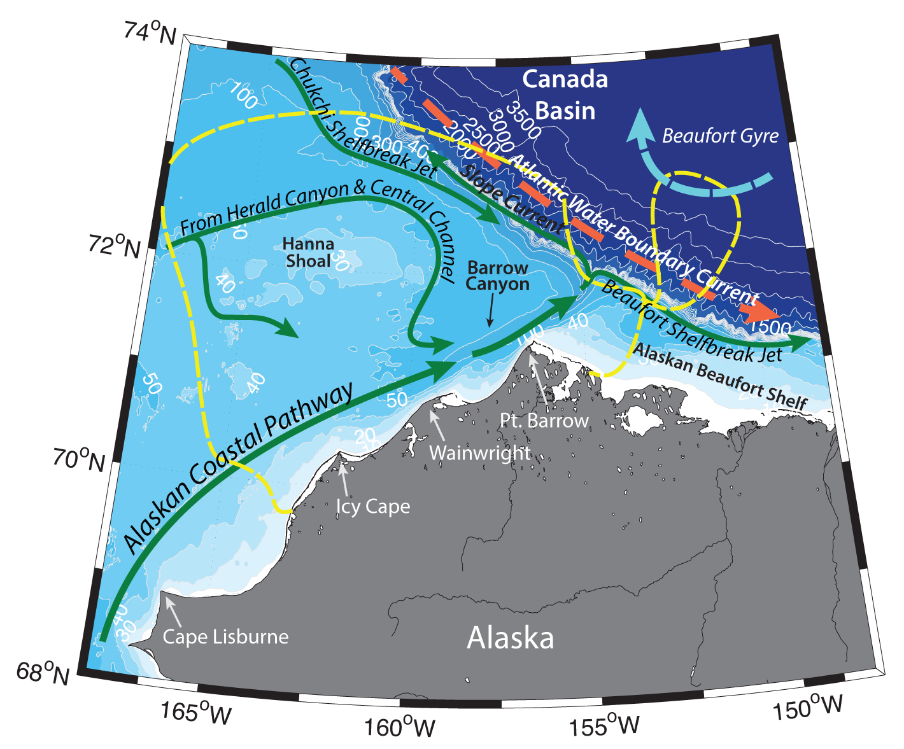

Schematic water circulation patterns and geographical place names in the Barrow Canyon region. Adopted from Pickart et al. (2016), Pisareva et al. (2019), Li et al. (2919). Dashed yellow line marks the studied region.
Pacific origin water brings freshwater, heat, nutrients, phytoplankton and zooplankton into the Arctic Basin and are known to exit the Chukchi Shelf via Herald Canyon, Barrow Canyon and Long Strait, as well as fluxed of the shelf all along the shelfbreak via turbulent processes and subduction (Pickart et al., 2005; Spall et al., 2008; Timmermans et al., 2014). Some of the water exiting Barrow Canyon turns to the east, forming an eastward-flowing shelfbreak jet along the edge of the Beaufort Sea (Nikolopoulos et al., 2009; Brugler et al., 2014). Another part of the Barrow Canyon outflow turns to the west and proceeds along the continental slope of the Chukchi Sea (offshore of the shelfbreak jet) in the Chukchi Slope Current (Corlett and Pickart, 2017; Li et al., 2019). Additionally, eddies and other turbulent features are formed at the canyon mouth and propagate northwards into the basin (e.g. Pickart and Stossmeister, 2008).
According to various research, from 40% (Weingartner et al., 2017) to 80–100% (Itoh et al., 2013; Gong and Pickart, 2015; Pickart et al., 2016) of the Bering Strait inflow drains through the Barrow Canyon during warm season (May – September). Averaged over the course of the year the division in transport between the three exit points from the Chukchi shelf is believed to be comparable (Woodgate et al., 2005). The year-long mean transport at the head of the canyon is estimated to be ~0.2 Sv (Weingartner et al., 2017), while at the mouth of the canyon it is estimated to be ~0.45 Sv (Itoh et al., 2013). This makes the canyon a particularly important gateway for Pacific Water entering the basin.
Circulation on the Chukchi shelf is sensitive to atmospheric forcing – especially seasonal wind patterns – due to the shallow depth of the sea. In the absence of wind, the flow generally follows bottom depth contours (e.g. Pickart et al., 2016). During summer and early fall Alaskan Coastal Current is advected along the Alaskan coast into the Barrow Canyon (e.g. Paquette and Bourke, 1974). It carries warm and fresh, Alaskan Coastal Water (T >2 3°, 𝑆 < 32) originating from the river runoff into the Gulf of Alaska (e.g. Pickart et al., 2010; Pisareva et al., 2015a,b).
Central Channel pathway steers Summer Bering Sea Water and Pacific Winter Water across the Chukchi Shelf. Summer Bering Sea Water (BSW; T =∼ 0−3°C, S =∼ 32−33; also known as Western Chukchi Summer Water (Shimada et al., 2001) or Chukchi Summer Water (von Appen & Pickart, 2012)) is a product of transformation of nutrient-rich Anadyr Water (S > 32.8) and colder and fresher Bering Shelf Water (S = ~31.5 – 32.8; Coachman et al., 1975). These waters mix to some degree north of Bering Strait and are rich in nutrients. During wintertime convective overturning water column is transformed so that its temperature is close to freezing. This water mass is known as Pacific Winter Water (WW; T < ~-1. 6°C, also known as Newly Ventilated Pacific Winter Water). WW can also be formed and further transformed locally on the Chukchi Shelf. Brine rejection during ice formation causes WW become saltier than 34 – this water is usually named Hypersaline Winter Water (HSWW). In spring and summer solar heating and/or mixing with summer waters modify the WW into a product called Remnant Winter Water (RWW; T =∼ −1.6 − 0°C, S >∼ 31.5 – 34), which temperature is no longer near the freezing point (e.g. Pisareva et al., 2015 a,b). Pacific Winter Water is the main source of nutrients in the Barrow Canyon.
After the water passes through Central Channel, it is steered anticyclonically around Hanna Shoal towards the head of Barrow Canyon. Some of the water from Herald Canyon branch also bends to the east north of Herald Shoal following the bathymetric contours and flows around Hanna Shoal into Barrow Canyon as well (Pickart et al., 2016). These branches are advecting Bering Sea water during late-summer and fall and various modes of Pacific Winter water during cold season to the spring and summer (Pickart et al., 2019). During the winter months into late-spring WW is also advected into the canyon along the Alaskan coast (Pickart et al., 2016; Weingartner et al., 2017).
Barrow Canyon is also known to be a biological “hotspot” due to its elevated nutrient concentrations, enhanced productivity rates, and high benthic biomass. Consequently, it is a region where marine mammals and seabirds concentrate (Hill and Cota, 2005; Grebmeier et al., 2015). In 2010 Barrow Canyon was included as one of the original sites of the Distributed Biological Observatory (DBO) program (Moore, Grebmeier, 2018).
Several other mechanisms apart from the advection are known to bring nutrient-rich water, enhance mixing and likely influence the productivity in the canyon. For example, enhanced small-scale mixing in the canyon (Shroyer, 2012) and bottom boundary layer detachment (Pickart et al., 2010a, 2010b) likely fluxes nutrients from the sediments into the water column.
Upwellings in the Barrow Canyon are known to bring nutrient-rich winter water from offshore into the canyon and onto the Chukchi Shelf (e.g. Pisareva et al., 2019). They can trigger phytoplankton blooms in the region (and even maintain under-ice blooms), which have been observed to be sustained for long periods of time in the presence of this water mass (Lowry et al., 2015). Enhanced primary production, in turn, leads to the increases in biological production across all trophic levels.
Warm Atlantic Water, which resides below the winter water in the interior basin (and is also rich in nutrients), can also be upwelled onto the Chukchi Shelf. At times, it is advected far south of the canyon (Bourke and Paquette, 1976) and can influence the formation and maintenance of the Northeast Chukchi Polynya (Ladd et al., 2016; Hirano et al., 2016). In addition, upwelling plays a role in other processes on the shelf, such as water mass transformation (e.g. Kawaguchi et al., 2011), ice freeze-up and melt, and eddy formation. It can also affect the properties of the waters that ultimately enter the Arctic basin (e.g. Weingartner et al., 2017).